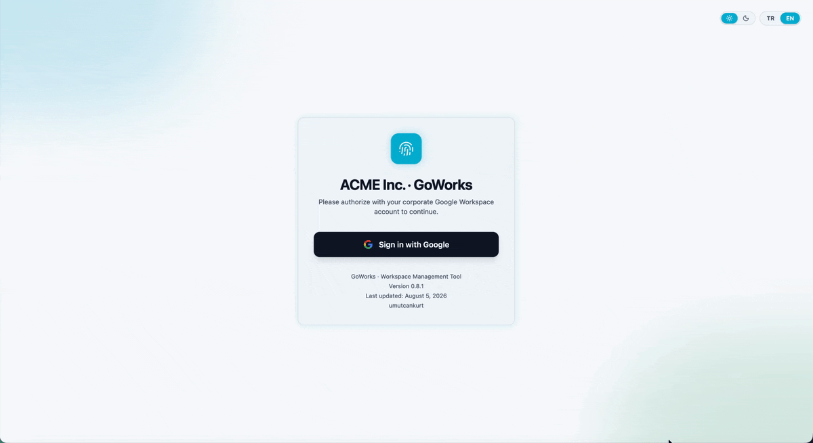
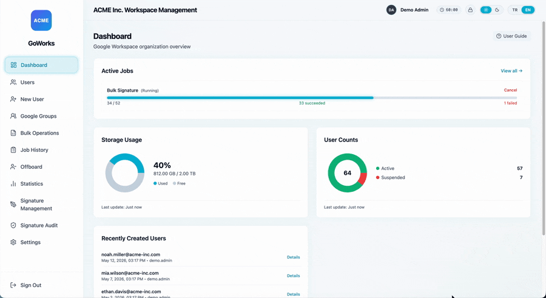
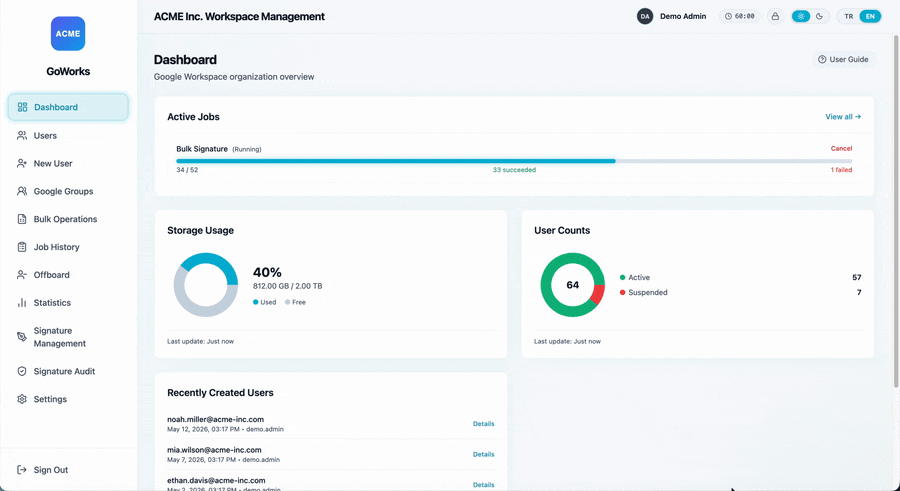
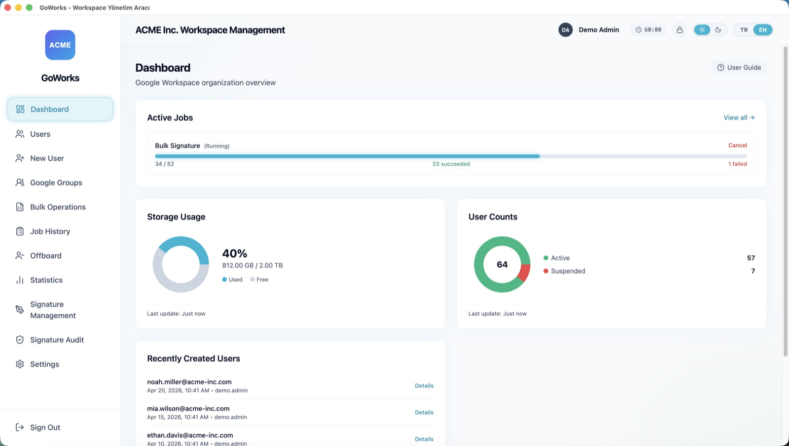
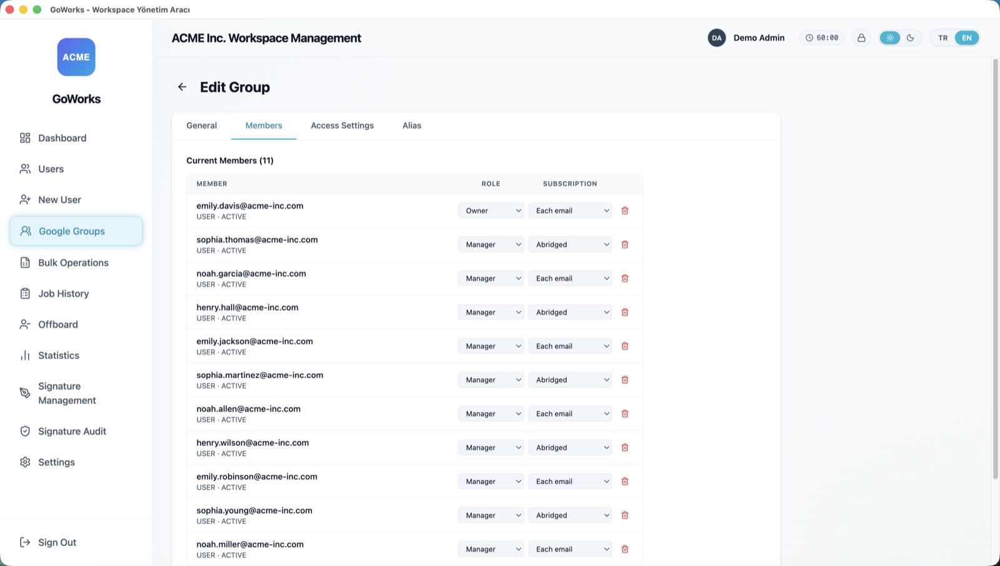
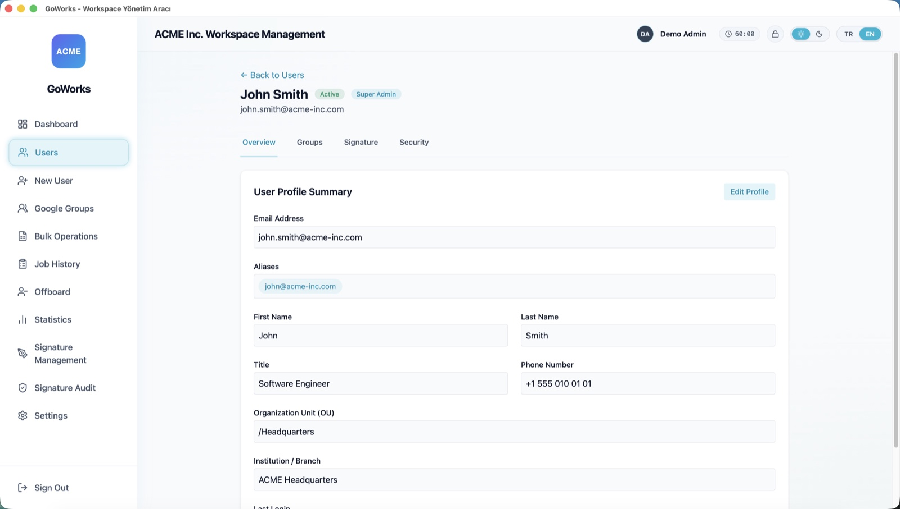

Offboarding, Gmail signature deployment, and group management — from a desktop app that runs entirely on your machine. No server, no vendor backend, no telemetry.
Apache-2.0 · macOS & Windows · installers are unsigned — verify the checksum

Suspending accounts from a CSV — every row validated before anything runs.
Google Workspace lifecycle work is repetitive, high-frequency, and unforgiving. The Admin Console is a GUI with no bulk workflow. GAM is enormously capable — and expects you to write and maintain scripts. There is very little in between.
| Admin Console | GAM / GAMADV-XTD3 | GoWorks | |
|---|---|---|---|
| Bulk work from a CSV | ✗ | ✓ (write a script) | ✓ guided wizard |
| Preview before executing | ✗ | ✗ | ✓ row-by-row validation |
| Gmail signature templating | ✗ | partial | ✓ editor + drift audit |
| Live progress, cancel, retry | ✗ | ✗ | ✓ |
| Learning curve | low | high — CLI + scripting | low |
| Runs where | Google's cloud | your terminal | your machine |
GAM is excellent and far broader in scope — if you already have mature GAM automation, keep it. GoWorks is for the admin who wants the same bulk reach without maintaining scripts, and without granting a SaaS vendor domain-wide access to the tenant.
Demo mode is a fully clickable prototype running against an in-memory fixture — no Workspace account, no Service Account, no master password, no internet. Judge whether it fits your workflow before you set up a Google Cloud project.
git clone https://github.com/umutcankurt/goworks.git && cd goworks
npm install && npm run demo:enSuspend, delete, push signatures, or add to groups from a CSV. Every row is validated before anything runs. Cancellable jobs, rate limiting, automatic retry, live progress.
Deprovision a departing employee as a guided flow instead of a checklist: suspend, set forwarding, remove from groups — without forgetting a step.
A template editor with reusable tokens and image upload, domain-wide deployment via a Service Account, and a drift audit that finds users whose signature no longer matches.
Full CRUD for groups, members, roles, aliases, and access settings. Search and edit profiles, manage aliases and forwarding, suspend and restore accounts.
The Service Account key and Google refresh token are encrypted at rest with Argon2id + AES-256-GCM, behind a master password with configurable idle auto-lock.
Company name, logo, sender name, and allowed domain are settings — not a rebuild. One build works for any organization, which matters if you manage several.
Captured in demo mode against a fictional tenant — no real customer data.





GoWorks releases are not signed with an Apple Developer or Windows code-signing certificate, so your OS will warn you that the developer cannot be verified. That is expected, and we would rather say so here than have you meet it at the dialog.
Because this app asks for Google Workspace super-admin access, don't click through that warning on our say-so. Verify the download first.
# macOS / Linux
shasum -a 256 GoWorks-Mac-0.8.1-Installer.dmg
# Windows (PowerShell)
Get-FileHash .\GoWorks-Windows-0.8.1-Setup.exe -Algorithm SHA256| v0.8.1 file | SHA-256 |
|---|---|
GoWorks-Mac-0.8.1-Installer.dmg | 2748beea…1b43bb8f |
GoWorks-Windows-0.8.1-Setup.exe | f5a73f6a…f558f8cb31 |
Full checksums are in the README,
and GitHub records the same digests on the release assets. If you would rather trust nothing at
all — the better instinct — the source is Apache-2.0 and npm run build produces the
same installers locally.